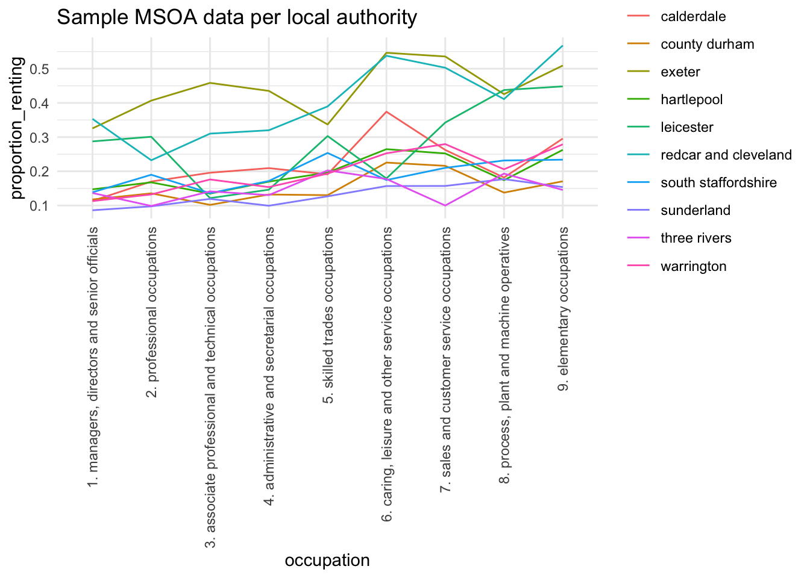
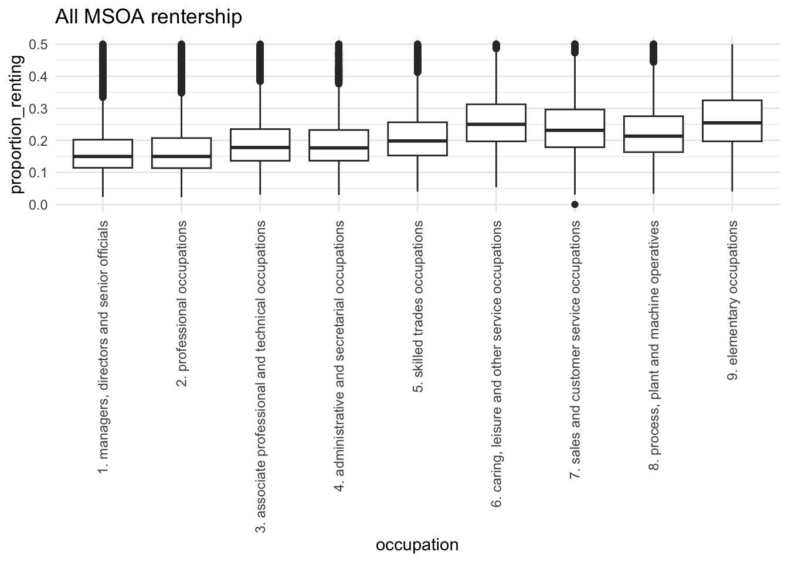
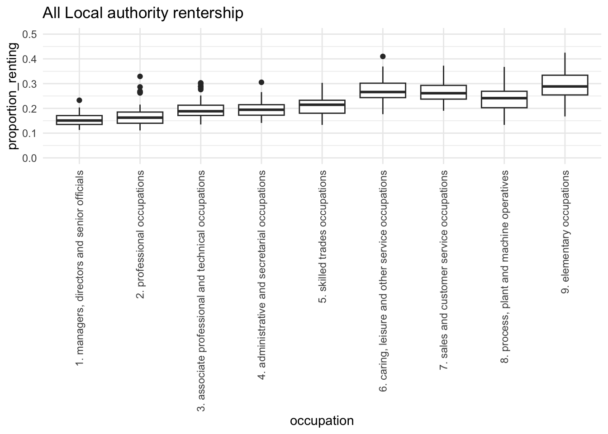
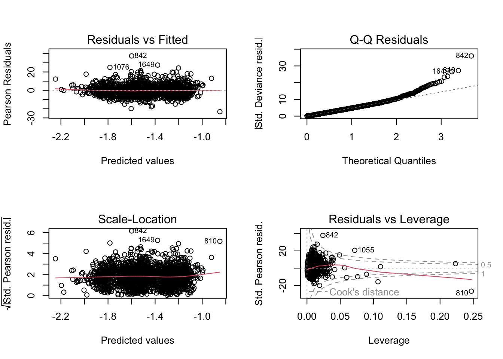
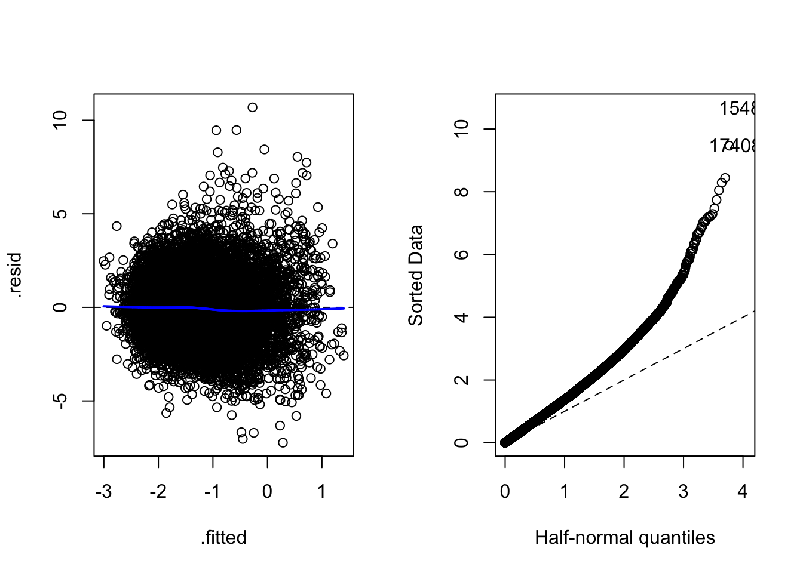
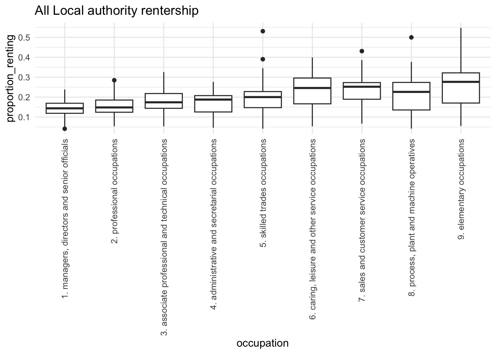
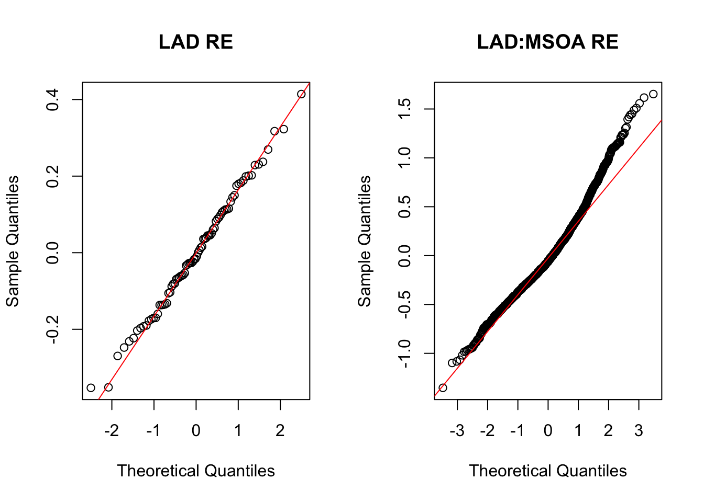
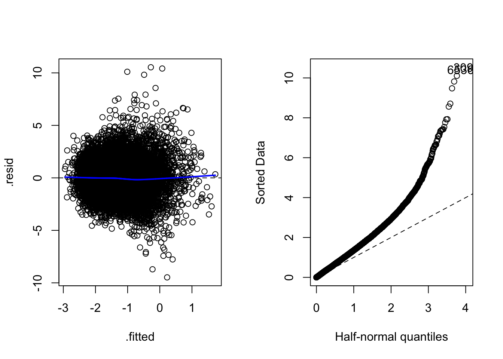

| 2021 super output area - middle layer | Total | 1. Managers, directors and senior officials | 2. Professional occupations | 3. Associate professional and technical occupations | 4. Administrative and secretarial occupations | 5. Skilled trades occupations | 6. Caring, leisure and other service occupations | 7. Sales and customer service occupations | 8. Process, plant and machine operatives | 9. Elementary occupations | Tenure of household |
|---|---|---|---|---|---|---|---|---|---|---|---|
| E02000062 : Barnet 039 | 358 | 94 | 113 | 42 | 19 | 33 | 17 | 8 | 19 | 13 | Owns with a mortgage or loan or shared ownership |
| E02000281 : Enfield 005 | 987 | 182 | 261 | 138 | 100 | 120 | 54 | 36 | 65 | 31 | Owns with a mortgage or loan or shared ownership |
| E02000017 : Barking and Dagenham 016 | 117 | 6 | 16 | 5 | 10 | 14 | 15 | 12 | 8 | 31 | Social rented |
| E02005502 : West Lindsey 011 | 1356 | 200 | 305 | 223 | 103 | 214 | 74 | 63 | 117 | 57 | Owns with a mortgage or loan or shared ownership |
| E02006032 : Shropshire 018 | 478 | 47 | 78 | 46 | 38 | 79 | 54 | 43 | 48 | 45 | Owns outright |
| E02003319 : Medway 006 | 352 | 37 | 40 | 43 | 28 | 49 | 27 | 19 | 55 | 54 | Owns outright |
Data
We use 2021 ONS Census data (via the Nomis API) that cross‑tabulates housing tenure and occupation at the MSOA level (“RM140: Tenure by Occupation - Household Reference Persons” 2023).
MSOAs (Middle Layer Super Output Areas) are neighborhood‑sized geographies. Counts refer to the household reference person (HRP) the person who represents the household, so each household is linked to a single occupation.
This differs from datasets that count all workers (for example, occupation‑by‑age used later), because a household can contain more than one person in full‑time work.
Dataset
Additional information
Local authority for each MSOA in original dataset is added, to account for rental patterns that may be present at local area levels. Being in the same Local authority may affect neighbouring MSOAs introducing correlations in their data.
It can be possible that age has a confounding effect on Rentership via Occupation. Majority of Professional and Managers may likely be older than associates and this may mean that they were able to purchase a house earlier in their careers/life and now represent a smaller proportion of rental cohort.
Adjusting for age gives an apples-to-apples comparison of rentership preference among people pursuing different occupations but are in boradly same phases of their life.
The adjustment is made by including the proportion of full-time employed HRPs in an MSOA engaged in a particular profession falling in one of the following age bands:
- aged 15 years and under
- aged 16 to 24 years
- aged 25 to 34 years
- aged 35 to 49 years
- aged 50 to 64 years
- aged 65 years and over
Note:
This adjustment is inexact since the data is available for all people in full time occupation rather than just HRP (which is the unit of measurement in tenure data). This means that likely an HRP would be an older person, the counts in age dataset include other members of the household which are possibly younger, creating a slight disconnect between the 2 datasets.
It is neverthless instructive to use this information as the downsides due to excluding this information outweigh downsided due to (incorrectly) including it.
Since, the interest lies in proportion of rentership for each occupation, per occupation totals for each MSOA are added to the dataset.
Filter
Current data only includes measurements from household reference persons (HRP) in full time employment a week before census.
It would be sensible to drop data if any occupation icluded positive entries in aged 15 years and under column.
Note:
- ONS rental tenure data includes a large proportion (~34%) of people not under full time employment(“Annex Table 1.5: Employment Status by Tenure,2021-22” 2023) (filtered out in current analysis)
- part-time work (~11% includes furloughed)
- retired (~7%)
- unemployed (~4%)
- full-time education (~4%)
- other inactive (~8%)
- The private rented sector houses the highest proportion of non-UK nationals (74% of HRPs in the private rented sector are from the UK, compared to 92% of social renters and 96% of owner occupiers) (“English Housing Survey 2021 to 2022: Private Rented Sector” 2023)
| msoa | tenure | occupation | counts_of_hrp | occupation_total | aged 15 years and under | aged 16 to 24 years | aged 25 to 34 years | aged 35 to 49 years | aged 50 to 64 years | aged 65 years and over | all_ages_total | region | lad_name |
|---|---|---|---|---|---|---|---|---|---|---|---|---|---|
| e02005011 | private rented or lives rent free | 9. elementary occupations | 21 | 97 | 0 | 0.2592593 | 0.1563786 | 0.2057613 | 0.3251029 | 0.0534979 | 243 | e12000008 | canterbury |
| e02005139 | private rented or lives rent free | 3. associate professional and technical occupations | 50 | 248 | 0 | 0.0911162 | 0.1708428 | 0.3394077 | 0.3416856 | 0.0569476 | 439 | e12000008 | thanet |
| e02002149 | private rented or lives rent free | 1. managers, directors and senior officials | 37 | 269 | 0 | 0.0123762 | 0.2227723 | 0.3688119 | 0.3391089 | 0.0569307 | 404 | e12000005 | south staffordshire |
| e02001798 | private rented or lives rent free | 3. associate professional and technical occupations | 17 | 157 | 0 | 0.1006711 | 0.2651007 | 0.3422819 | 0.2684564 | 0.0234899 | 298 | e12000001 | sunderland |
| e02002824 | private rented or lives rent free | 6. caring, leisure and other service occupations | 57 | 285 | 0 | 0.0848375 | 0.2382671 | 0.3808664 | 0.2725632 | 0.0234657 | 554 | e12000004 | derby |
| e02002935 | private rented or lives rent free | 4. administrative and secretarial occupations | 40 | 144 | 0 | 0.0731707 | 0.2404181 | 0.2508711 | 0.3937282 | 0.0418118 | 287 | e12000005 | telford and wrekin |
Subsample
Since, the dataset is very well compiled but is large, we can work with reduced dataset and infer large scale effects from it. This reduction will allow speeding up the analysis and experimentation.
The subsampling process does the following:
- Randomly sample 10 local authorities from 8 UK wide regions (e.g. West midlands, East of England etc.) excluding London region (since market behaviour may not generalise to other regions and create issues when data is mixed with others, due to very high counts)
- Within each of the sampled local authorities sample 50 MSOAs at random
- Get all the data in the sampled MSOAs
The above procedure is deliberate in that it results in balanced data among Local authorities to avoid issues with inference.
It goes without saying that this step means that Local Authorities and MSOAs need to be treated as random effects down the line (with appropriate heirarchy).
The procedure ensures sufficient counts of Local Authorities and MSOAs to be able to reliably capture these random effects.
| rows | distinct_tenure | distinct_occupation | max_counts | min_counts | median_counts | distinct_lad | distinct_msoa |
|---|---|---|---|---|---|---|---|
| 18495 | 1 | 9 | 882 | 2 | 40 | 80 | 2055 |
EDA
At the level of MSOA the proportion of rentership can appear quite chaotic and noisy.

Aggregated data shows clear differences in renting by occupation. Highly skilled and professional workers rent less, likely because they can more easily afford to buy.

The observation holds and patterns become more clear when the data is aggregated at Local authority level. This means that a heirarchical consideration of geographies could be a sensible inclusion in the model.


There is a slightly long tail of working population per msoa.
Looking at the msoa where the greatest proportion of working population is renting, a few key dense local authority areas are highlighted
| lad_name | msoa | aggregate_proportion_renting | total_working_population |
|---|---|---|---|
| bradford | e02006948 | 0.728 | 1660 |
| leeds | e02002373 | 0.719 | 2022 |
| leeds | e02006875 | 0.712 | 2797 |
| leeds | e02002392 | 0.711 | 1508 |
| leicester | e02002849 | 0.694 | 3566 |
| east riding of yorkshire | e02002666 | 0.677 | 2259 |
| southampton | e02003565 | 0.650 | 1931 |
| leicester | e02002842 | 0.641 | 2504 |
| southampton | e02003571 | 0.627 | 2236 |
| peterborough | e02003250 | 0.623 | 3272 |
Modelling
Baseline Model: Fixed effects without location information
We refer to data at MSOA level for modelling. For the baseline model, MSOA variable is excluded and Elementary occupations are treated as a reference category for Occupation variable. aged 15 years and under variable is dropped as it is irrelevant for this study. It is immediately obvious that occupation has significant association with proportion of people renting.
Analysis of Deviance Table
Model: binomial, link: logit
Response: cbind(renting_total, occupation_total - renting_total)
Terms added sequentially (first to last)
Df Deviance Resid. Df Resid. Dev Pr(>Chi)
NULL 18494 338719
occupation 8 59415 18486 279305 < 2.2e-16 ***
age_25_34 1 74323 18485 204982 < 2.2e-16 ***
age_35_49 1 1804 18484 203178 < 2.2e-16 ***
age_50_64 1 28045 18483 175133 < 2.2e-16 ***
age_over_65 1 171 18482 174961 < 2.2e-16 ***
---
Signif. codes: 0 '***' 0.001 '**' 0.01 '*' 0.05 '.' 0.1 ' ' 1The diagnostics look assuring and at this point, outliers do not appear to be significantly harmful.

It can be investigated to see which data points are causing this.
Manual inspection can be aided by geographic location data MSOA Map
- e02002991 : Is in the middle of Bath town Center and has much higher proportion of Professionals than what model predicts.
- e02006841 : Is a high leverage point. Is in the center of Gateshead, which has slightly higher proportion of Professionals than what model predicts. High leverage comes from 61% Professionals falling in age_25_34 bracket. But the residuals indicate that the influence of this data point is not high
- e02007095: Dinnington, has a very low proportion of rentership (6%), which causes a high value of residuals. This is an affluent, semi-rural village with many of the houses been bought under right to buy legislation (“Newcastle Residential Areas,” n.d.).
- e02005775: Harrogate, rentership is severly underpredicted due to 27% Professionals falling in 50-64 age bracket, leading to a high residual.
| age_16_24 | age_25_34 | age_35_49 | age_50_64 | age_over_65 |
|---|---|---|---|---|
| 0.0971357 | 0.3430884 | 0.2826899 | 0.2353674 | 0.0417186 |
| 0.1165957 | 0.6153191 | 0.2017021 | 0.0578723 | 0.0085106 |
| 0.0388693 | 0.3951708 | 0.4517079 | 0.1060071 | 0.0082450 |
| 0.0752961 | 0.2876481 | 0.3307953 | 0.2724196 | 0.0338409 |
Using location information in the model
Each MSOA can have its own level of rentership that needs to be accounted for (and town centers can be very different from suburbs).
This is an opportunity for us to introduce location information (LAD and MSOA) in the model. We shall be mindful of the fact that the MSOA and LAD are randomly chosen and that MSOA are nested inside LAD.
Diagnostics have improved and residuals are smaller than before, so the addition of MSOAs in model is worthwhile. This is also confirmed in the ANOVA output.

Data: dataset
Models:
glmod_base: cbind(renting_total, occupation_total - renting_total) ~ occupation + age_25_34 + age_35_49 + age_50_64 + age_over_65
glmermod: cbind(renting_total, occupation_total - renting_total) ~ occupation + age_25_34 + age_35_49 + age_50_64 + age_over_65 + (1 | lad_name) + (1 | lad_name:msoa)
npar AIC BIC logLik -2*log(L) Chisq Df Pr(>Chisq)
glmod_base 13 272503 272605 -136238 272477
glmermod 15 147626 147744 -73798 147596 124881 2 < 2.2e-16 ***
---
Signif. codes: 0 '***' 0.001 '**' 0.01 '*' 0.05 '.' 0.1 ' ' 1Random effects of LAD appear reasonably normally distributed.
MSOA nested inside LAD are slighly more dispersed and have longer tails. The worst residual point lies in Catterick Garrison, which is a small town with a large army base and unusually high rentership of Associate professionals in that area.

Before moving to inference using this model, it is important to check how it fits. ChiSq GoF test suggests p-value 0, which indicates that there is still quite a lot of variance in data that isn’t explained by the current model.
The dispersion parameter is 2.15. This indicates that dispersion is not too extreme and we chose not to address this.
Looking at the coefficients of Occupation types, since Elementary Occupations was reference class, the odds for any Occupation are relative to it.
In general any Occupation category is less likely to rent compared to Elementary Occupations, in particular Professionals are nearly 40% less likely (0.6x) to rent.

Age plays a key role in likelihood of renting too. Highest rentership can be observed in 25-34 year olds. This is almost 4x more (300% more) compared to 16-24 year olds.
This is likely because young adults aged 16-24 rarely act as HRPs for rented homes; instead, they are typically dependent residents in owner-occupied parental households.

References
“Annex Table 1.5: Employment Status by Tenure,2021-22.” 2023. Department for Levelling Up, Housing; Communities. https://assets.publishing.service.gov.uk/media/64ad65e48bc29f000d2cca7f/EHS_21-22_PRS_Ch_1_Annex_Tables.ods.
“English Housing Survey 2021 to 2022: Private Rented Sector.” 2023, July. https://www.gov.uk/government/statistics/english-housing-survey-2021-to-2022-private-rented-sector/english-housing-survey-2021-to-2022-private-rented-sector.
“Newcastle Residential Areas.” n.d. https://newcastleareas.wordpress.com/dinnington/.
“RM140: Tenure by Occupation - Household Reference Persons.” 2023. Office for National Statistics. https://www.ons.gov.uk/datasets/RM140/editions/2021/versions/2.